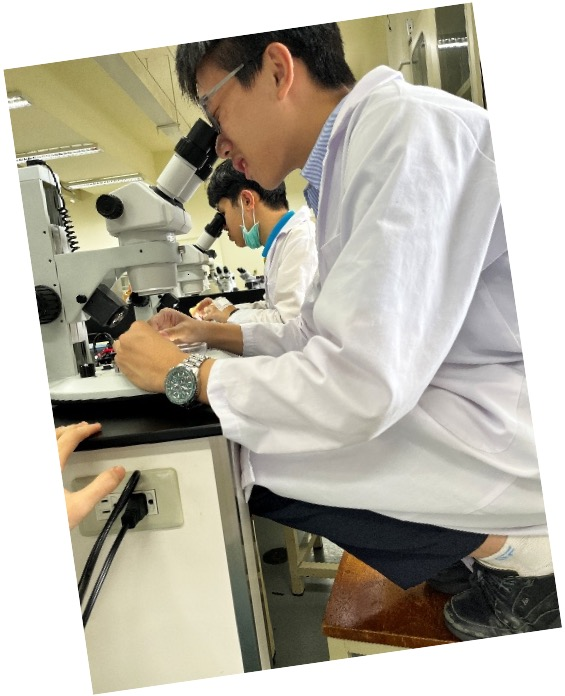
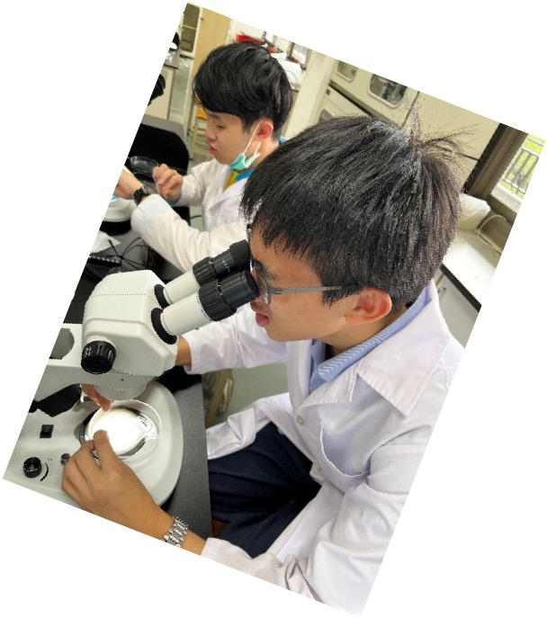

主題簡介
顯微科技是微觀下的實踐。在屏息運刀間，體會從失敗到逐步優化的過程價值；當親手切下的薄片在鏡下展現生命質感，課本知識即轉化為真實感官經驗。這份「親眼見證」讓學習不再是死記，而是透過雙手與視野的磨練，建構出深刻的實踐力量與見證。

動機
對大自然的熱忱是我探索科學的動力。我好奇植物放出芬多精的奧祕，更嚮往解剖實驗帶來的立體感。我不滿足於書本上的靜態文字，始終認為「親手實踐」才是最有效的學習方式。透過顯微科技，我能將抽象知識具象化，讓生物學變得鮮活且深刻。

遇到的困難與解決

加拿大學習之旅
主題簡介
在課堂中與來自巴西的同學一起學習與報告，我們在跨文化的交流中，學會了如何交換想法並達成共識。這段旅程讓我深刻體會到異國教育體系的運作邏輯，進而開始重新審視過往的學習慣性，思考最適合自己的成長環境。透過與不同背景的人共事，我學著站在對方的角度思考，在多元與包容中，將這些細微的觀察轉化為對自我的深度探問與蛻變。
照片格子｜上課、交流與實地體驗
英文話劇
把編劇、道具製作、排練與上台演出整理成一個完整主題區，呈現英語表達與團隊合作的歷程。
活動內容
在英文話劇活動中，我擔任編劇人員，也承擔音效組、道具組的工作。從構思劇情、調整橋段，到協助演員理解角色與情緒，我逐步把原本零散的想法，整理成在舞台上被真正感受到的作品，並透過真誠的對話去溝通、化解團隊內的分歧，進而將這些火花匯聚成照亮舞台的力量，透過活動籌備期間，深刻體會到團隊合作的重要性、激盪劇本的創作力以及面對突發的解決能力與 換為思考的重要性。
照片展示｜製作、排練與團隊成果
反思與成長
生活化學
把化學課堂中的實驗、操作紀錄、心得整理成照片與影片並行的展示區，延續前面主題的冷色與乾淨留白。
主題簡介
在生活化學的實驗室裡，我與組員共同完成色層分析的色彩推移與藍印術的顯影過程。我們在一次次的實驗中磨練穩定度，並在蒸餾實驗中學會耐心，等待實驗結果。當成果不如預期時，我們不急於挫敗，而是透過數據的比對與邏輯推演，冷靜找出關鍵變因，並帶領小組在反覆驗證中尋求突破。這段過程讓我體會到，親手做實驗的魅力不僅在於成功的瞬間，更在於面對未知時那份追根究底的韌性。